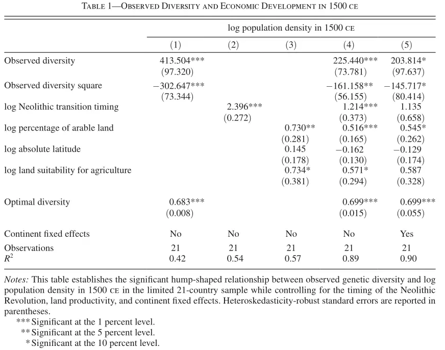
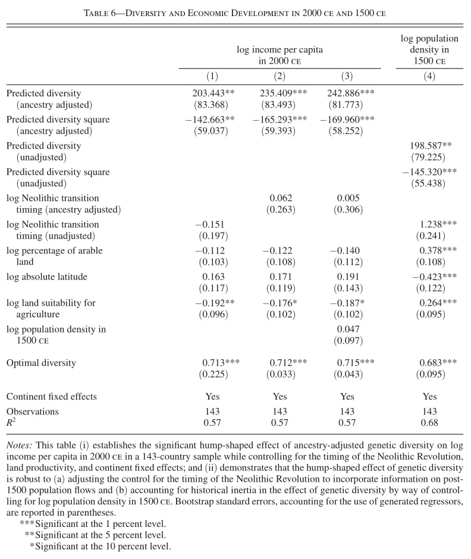

5 Diversité génétique et développement: Ashraf et Galor (2013)
Le papier Ashraf and Galor (2013a) propose l’idée qu’au sein des sociétés, les différences entre individus peuvent être une source de richesse ou entraîner des coûts économiques. Ainsi, les auteurs proposent que dans une société, le fait qu’il y a plus de différences entre personnes:
- Augmente la probabilité que les interactions entre personnes soient complémentaires, donnant lieu à une amélioration technologique,
- Augmente la probabilité que quelqu’un soit spécialement doué pour une activité, augmentant la productivité.
- En général, permet plus d’innovation et pusse la frontière productive.
Par contre, une société dans laquelle les membres sont très différents pose aussi certains coûts:
- La coordination est plus difficile, car on peut avoir préférences différentes,
- Le conflit est plus probable,
- Le confiance vers les autres est inférieure.
Ainsi, vu les coûts et les bénéfices, il est fort probable que la relation entre diversité et croissance économique aie forme de U inversé. C’est-à-dire, si tous les gens sont égaux, on ne profite pas des avantages liés à la diversité. Et au contraire, si les différences entre gens sont maximales, les coûts surpassent énormément les bénéfices. Alors, il semble qu’un niveau optimal de diversité peut exister.1
5.0.1 Une mesure de diversité entre personnes : diversité génétique
L’hypothèse de base de ce article est que la migration humain depuis l’Afrique il y a 70000-90000 ans a affecté la diversité génétique et, donc, si ce que les autors proposent est correct, aura affecté de manière indirecte le développement économique. Alors, Ashraf et Galor s’appuient sur des recherches en athropologie et en génétique pour avoir une mesure de la diversité génétique entre personnes au sein d’un pays. On part de l’effet fondateur, c’est-à-dire, le fait que, quand on scinde un petite population, la diversité génétique du noveau groupe ainsi crée est inférieure à celle du groupe d’origine. On peut appliquer ce concept à la migration humaine depuis l’Afrique. De cette manière, à mesure que les hommes conquirent des nouvelles endroits (Europe, Asie, îlles du sud-est de l’Asie, Amérique du Nord et du Sud, etc), la diversité génétique diminuira. Bien compris, ce qui est important est la distance migratoire par terre.
Un indice qui mésure la diversité génétique est le taux d’hétérozigosité : la probabilité que deux personnes tirées au hasard partagent certaines gens. Ces donnés existent pour 53 groupes humains qui ont vécu plus oi moins isolés et au même endroit pour très longue temps. En effet, on voit qu’il existe une corrélation négative entre la distance à Addis Ababa et quelques indicateurs de diversité, y compris l’hétérozigosité.

5.0.2 Résultats
D’abord, Ashraf et Galor utilisent un enchantillon de 21 pays pour lesquels une mesure directe du niveau d’hétérozigosité existe. Même avec une taille si reduite, on voit une relation en forme de U inversé entre le niveau de diversité génétique et le développement économique pendant l’année 1500. Il est important de rappeler que, vu que les régressions se concentrent en l’èpoque Malthusienne, la variable qui mesure correctement le niveau de développement est la densité de population et non le revenu per capita.

Or, on peut constater que l’hypothèse de Jared Diamond est aussi vérifiée : les pays qui ont adopté l’agriculture plus tôt se sont plus développés.
Ensuite, les auteurs enlargisent leur enchantillon utilisant le fait que la distance migratoire à Addis Ababa est éxogene et permet de predire, avec précision, le niveau de diversité génétique.
En plus, les auteurs montrent que cette relation existe aussi pour le présent, cette fois ci, utilisant le niveau de revenu per capita en l’année 2000.

On voit que le niveau optimal de diversité génétique change avec le temps : en 1500 il était de 0.68 et en 2000 il est de 0.71. Ainsi, avec le progrès technologique, une plus grand diversité entre les gens est nécéssaire pour la croissance économique : par example, le dégré d’spécialisation productive est supérieur aujourd’hui. Ces niveau corréspondent au Japon en 1500 et aux États-Unis en 2000.
5.0.3 Méchanismes
Enfin, plusieurs auteurs ont pris le relais et se sont concéntrés sur les méchanismes qui pourraient être derriére la relation entre diversité génétique et développement. En premier lieu, Ashraf et Galor montrent de l’evidence qui mets en relation la diversité génétique avec le niveau de confiance (un des coûts de la diversité) et la production scientifique. Ainsi, si les hypothèses étaient correctes, on s’attend à ce que les pays avec une plus grande diversité génétique montrent de niveaux moins inférieures de confiance vers les tiers personnes et qu’ils produissent davantage de recherches scientifiques.
Une autre possibilité qu’on peut explorer c’est la relation entre la diversité génétique et le nombre de groups ethniques Ashraf and Galor (2013b). Ainsi, vu que la diversité génétique est lié à une moindre confiance envers les tiers, il est possible que les sociétés les plus affectées par cette manque de confiance il y ai des séparation dans un groupe, en créant par la suite plusieurs.
Pour finir, une plus grand variété génétique, qui donne lieu à des personnes qui pensent différenment, devrait être lié à une plus large gamme de préférences politiques. En autre, les différences interpersonneles et la manque de confiance sont suceptibles d’engendrer des conflits civiles.
Ces deux alternatives sont explorées par Arbatli et al. (2020).
Ce niveau optimal de diversité change avec le développement économique, c’est-à-dire, le niveau optimal pendant l’année 0 est différent du niveau optimal pendant l’année 1500.↩︎